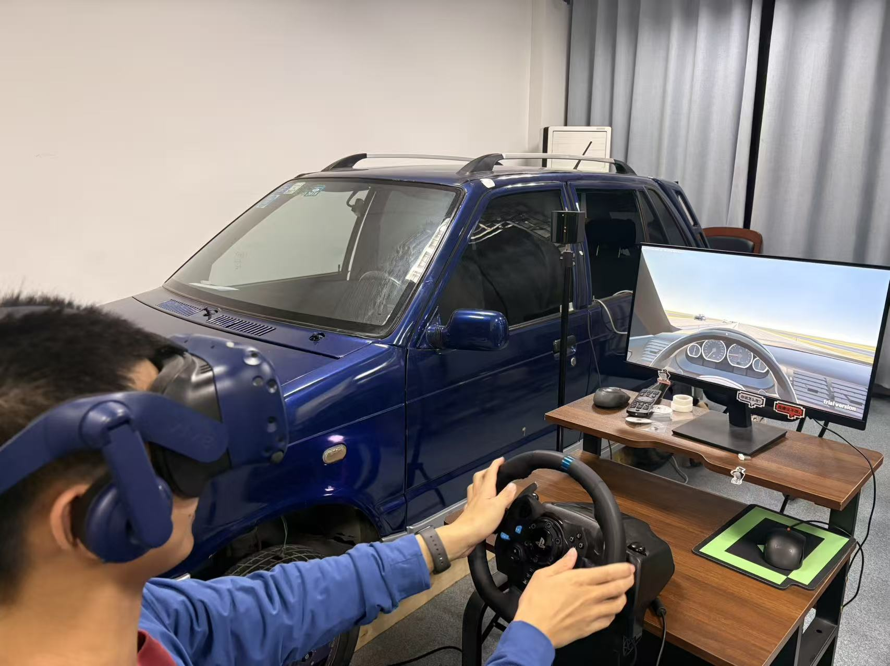
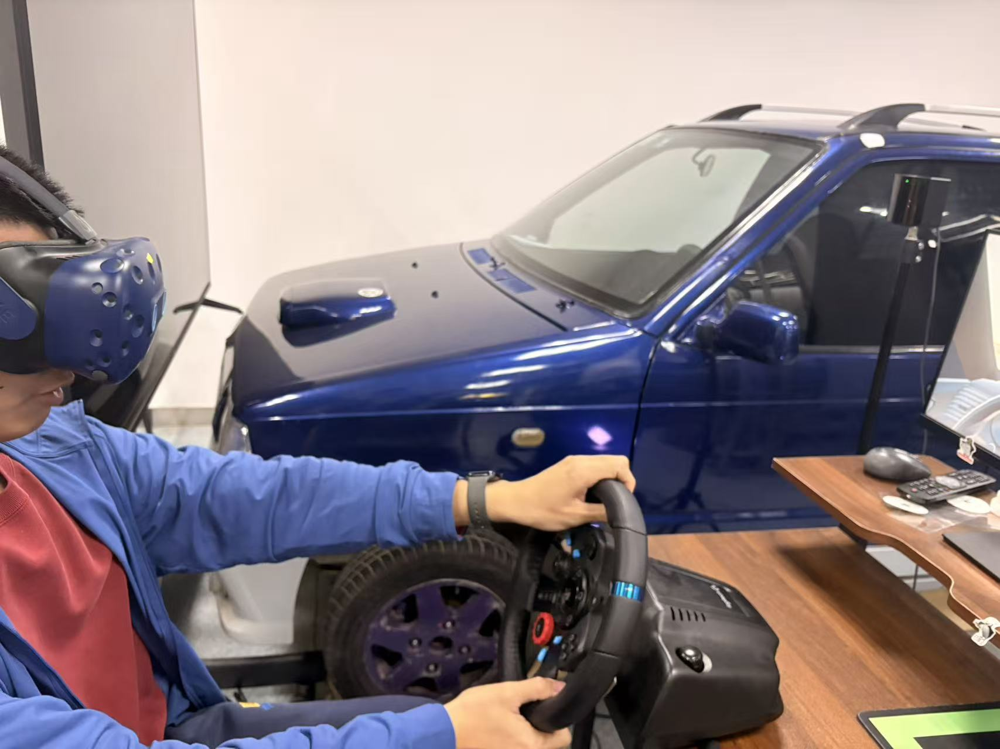

01
实验场景与平台搭建
目标
搭建可支撑驾驶模拟研究的实验场景与软硬件运行环境。
完成
- 基于 Unity 从 0-1 搭建驾驶实验场景，完成道路环境、事件逻辑与实验流程开发。
- 打通驾驶模拟器、显示系统与实验计算设备，实现软硬件联调与稳定运行。
- 针对道路、绿化与环境细节进行渲染优化，兼顾画面表现与运行性能，支持较低配置设备完成 90 分钟以上实验任务。
Unity 场景开发
软硬件联调
渲染优化
基于实验目的选择不同驾驶模拟环境


桌面版驾驶模拟实验场景
真实操控与驾驶负荷场景
适配平台：真实模拟器
转向、制动、跟车、变道、接管、操作稳定性，以及方向盘、踏板、座椅振动等真实驾驶负荷研究。
座舱交互与产品验证场景
适配平台：真实模拟器
HUD、中控、语音、警报、按键/触屏、ADAS提醒等在真实硬件条件下的可用性和落地效果验证。


VR版驾驶模拟实验场景（HTC Vive Pro Eye + Tobii XR）
危险事件与应急反应场景
适配平台：VR模拟器
突发行人、鬼探头、前车急刹、恶劣天气、低能见度等高风险事件下的反应时间、避撞行为、注意力分配。
视觉注意与眼动行为场景
适配平台：VR模拟器
驾驶员看哪里、看多久、扫视路径、分心检测、界面信息搜索、警示提示是否被看见等研究。